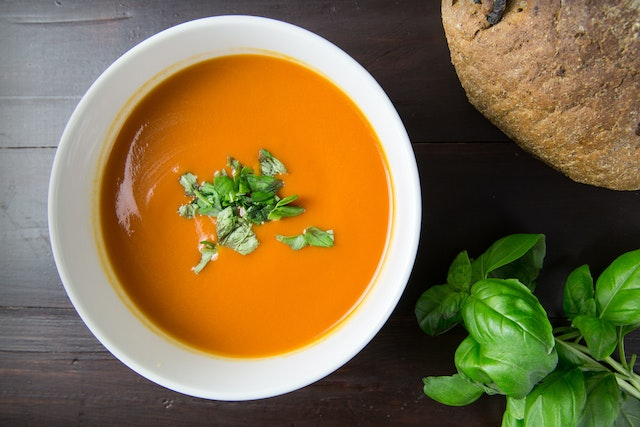

Tomato Soup Recipe
>
Description
A warming tomato soup! Perfect for cold winter nights.
Ingredients
- 2 tbsp olive oil
- 1 onion, chopped
- 1 garlic clove, finely chopped
- 1 tbsp tomato purée
- 400g can chopped tomatoes
- Handful of basil
- Pinch of bicarbonate of soda
- 600ml milk
Steps
- Heat the olive oil in a large pan, then tip in the onion and garlic.
Cook over a moderate heat until the onion has softened, about 5 mins.
Stir in the tomato purée, then pour in the chopped tomatoes and basil leaves,
and bring up to the boil. Turn the heat down and leave to simmer for about
15 mins until thick and full of flavour. If you like a smooth soup, whizz
the mixture at this point to form a smooth sauce. Can now be cooled and
frozen for up to 1 month.
- To finish the soup, tip the tomato mixture into a pan. Spoon the baking soda
into a small bowl and pour over 1 tbsp or so of the milk. Mix together until
there are no lumps, then tip into the tomato mix and pour over the milk.
Bring up to a boil (the mixture will froth, but don’t worry – it will go away).
Gently simmer for about 5 mins until ready to serve.
Back to Home Page